地政学
スリジャヤワルダナプラコッテは国会を置く行政首都で、商業首都コロンボと連続します。国家の象徴を湖上に移し、港湾都市への集中を和らげる試みとして読むと、島国政治の空間戦略が見える重要な場所でもあるのです。
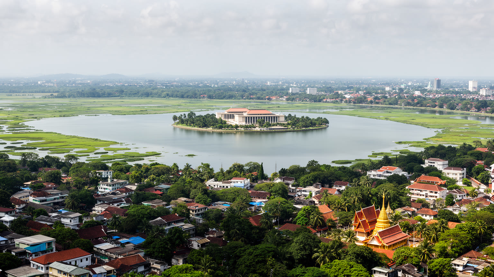
🇱🇰 スリランカ / 西部州 / World City Atlas
コロンボの東に接し、ディヤワンナ湖の国会、旧王都の遺跡、仏教寺院、湿地、学校、郊外住宅が重なるスリランカの行政首都です。国家政治と水辺の日常が近い距離で交差します。
都市の骨格
スリジャヤワルダナプラコッテは、国会を中心に行政機能を受け止めながら、旧王都の記憶、湿地の排水、寺院と学校、コロンボ都市圏の郊外生活を重ねています。
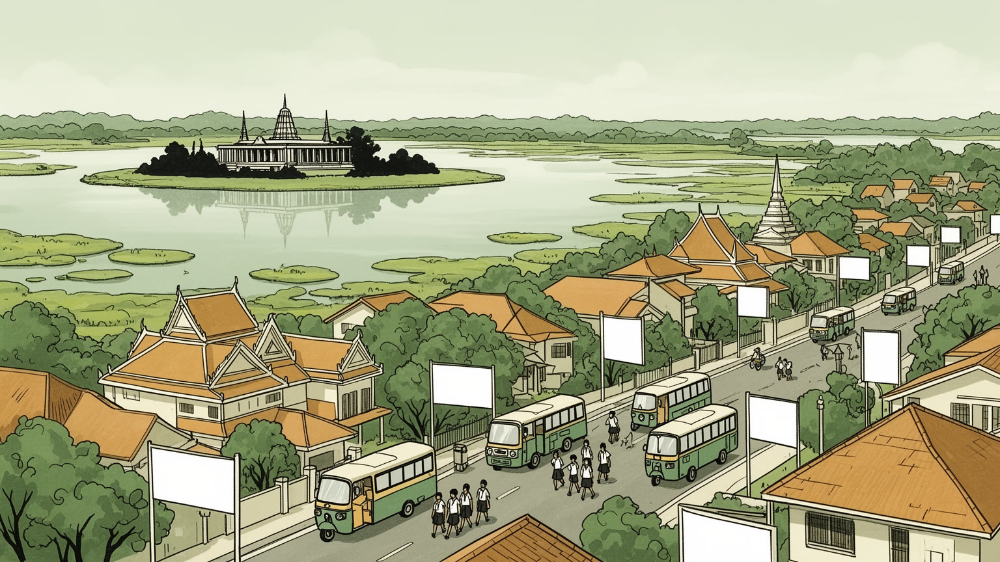
スリジャヤワルダナプラコッテは国会を置く行政首都で、商業首都コロンボと連続します。国家の象徴を湖上に移し、港湾都市への集中を和らげる試みとして読むと、島国政治の空間戦略が見える重要な場所でもあるのです。
雇用は行政、教育、医療、金融周辺業務、小売、不動産、交通、家事労働に広がります。市内の学校と近隣の官庁街、オフィス、病院は、通勤者と住民の生活を支えるサービス都市の基盤でもある街です。働く場も多いです。
コッテ王国の記憶、王都遺跡、ラジャ・マハ・ヴィハーラのペラヘラ、仏教寺院、ヒンドゥーやイスラム、キリスト教の生活圏が近いです。シンハラ語とタミル語の都市で、信仰と学校が日常を形作る重要な街でもあるのです。
旅行者は国会湖、湿地公園、遺跡、寺院、博物館を訪れるが、住民には渋滞、洪水、地価、学校送迎、ごみ、排水が毎日の課題です。水辺の緑と都市化の圧力を同時に見る生活都市でもある街です。暮らしの現実も映します。
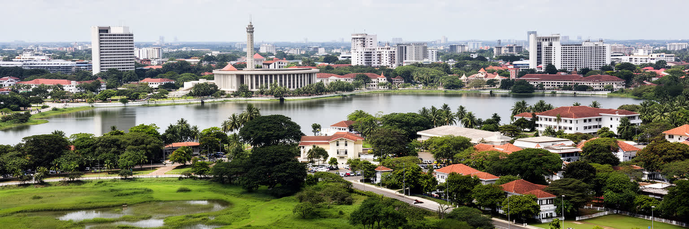
スリジャヤワルダナプラコッテの首都性は、コロンボの港湾商業とは少し違う場所に国家の象徴を置く発想から生まれました。ディヤワンナ湖に囲まれた国会議事堂は、都市の中心に巨大な官庁街を詰め込むのではなく、水辺と湿地を背景に政治を見せます。独立後のスリランカでは、植民地期から続くコロンボ集中、交通混雑、行政機能の過密が課題となり、旧王都コッテの名を持つ地域へ国会を移すことは、歴史的正統性と都市計画の両方を帯びた選択でした。ただし、首都機能が移ったからといって経済の重心が一気に変わるわけではありません。省庁、裁判、企業、港、外交、金融の多くは今もコロンボ都市圏に広く分散し、住民は市境を意識せず通勤します。だからコッテは単独の巨大首都というより、コロンボ圏の中で政治の核を担う行政都市です。湖上の議事堂を眺めると、国家の儀礼は静かに見えますが、周辺道路では通勤、警備、学校送迎、抗議、式典、日常の買い物が重なります。首都とは記念碑だけではなく、制度を動かす人々の移動と、住民の生活基盤が折り合う場所でもあります。さらに、行政首都の配置は地方との関係も映します。島の各地から来る議員、職員、記者、陳情者は、この湖畔で全国の課題を都市の日常へ持ち込みます。議場の静けさと周辺の交通量は、政治が生活から切り離せないことを示している場所なのです。
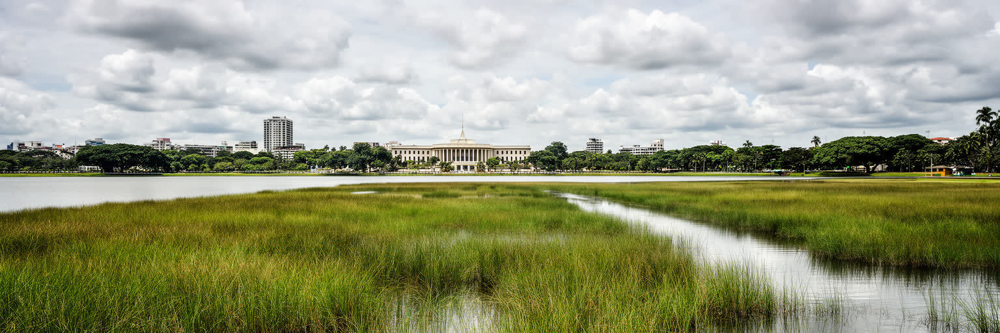
コッテを特徴づけるのは、国会の背後に広がるディヤワンナ湖と湿地です。市の公式説明でも、湿地は大雨時に余分な水を受け止め、周辺の排水を保持し、洪水をやわらげる重要な仕組みとして位置づけられています。ですが都市化が進むほど、湿地は住宅、商業施設、道路、駐車場、ごみ捨て場として圧迫されやすいです。水辺は景観資源であると同時に、都市のインフラであり、失えばすぐに冠水、悪臭、蚊、交通障害、住宅被害として戻ってきます。ディヤワンナ湖の遊歩道や公園は、市民の散歩、運動、家族の時間、観光の視線を集めるが、その美しさは目に見えない排水管理と土地利用規制に支えられます。熱帯モンスーンの強い雨は、短い時間で道路を水浸しにし、低い地区の家計に修理費を強います。湿地保全は自然愛好家だけの主張ではなく、都市の公平性と災害対策の問題です。国会が水に囲まれている事実は象徴的でもあります。政治が守るべき公共財は、議場の外の湿地、運河、緑地、排水路にもあります。水辺を都市の余白として扱うか、生命線として扱うかで、コッテの未来は大きく変わります。水鳥や葦原を守ることは観光の演出にとどまらず、都市の温度を下げ、雨を受け、子どもが自然を学ぶ場を残すことでもあります。小さな水路の詰まりが大きな洪水へつながるため、日常的な管理こそ重要になる仕事なのです。
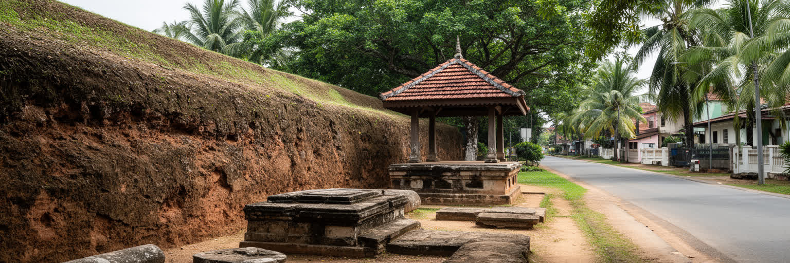
スリジャヤワルダナプラコッテは、現代の行政首都である前に、十五世紀のコッテ王国を思い起こさせる地名です。かつての城壁、土塁、池、寺院、王宮跡、石造のアンバラマ、古い道の名は、現在の住宅地、学校、商店、交通量の多い交差点の中に断片として残ります。国会移転によって古都の名が改めて国家の中心へ引き寄せられたが、遺跡は大規模な歴史公園として一体化しているわけではありません。むしろ住民の通学路、寺院の境内、路地、庭先、博物館の展示の中に、王都の痕跡が点在します。そのため、観光客が短時間で壮大な遺構を期待すると拍子抜けするかもしれありません。しかし、都市史として見るなら、この断片性こそ重要です。ポルトガル、オランダ、イギリスの支配、コロンボの成長、郊外化、現代政治が重なり、王都は消えたのではなく、別の都市の下地になりました。コッテの歴史を読むことは、スリランカの首都性が港湾だけでなく、内陸の水路、防御、仏教、王権、文学とも結びついてきたことを知る手がかりになります。遺跡を守るには、発掘や標識だけでなく、周辺の生活と調和した保存が必要です。小さな遺構は開発の中で見落とされやすいが、そこに残る地名や祭礼、学校の記憶は、住民が自分の街を理解する教材になります。古都を観光資源として磨くほど、日常の尊重も欠かせない視点なのです。
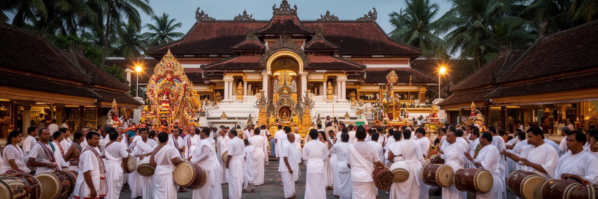
コッテの宗教生活では、仏教寺院が歴史と日常をつなぐ役割を持ちます。コッテ・ラジャ・マハ・ヴィハーラは旧王都の記憶と結びつき、毎年のペラヘラは、寺院、通り、家族、学校、商店を一つの儀礼空間に変えます。白い衣服で参拝する人々、供物、灯明、太鼓、舞踊、象の行列は、観光の見どころであると同時に、地域の信仰、寄付、奉仕、世代継承の仕組みでもあります。近隣にはヒンドゥー、イスラム、キリスト教の生活圏もあり、コロンボ都市圏らしい多宗教性が見えます。宗教は政治と切り離された私的な領域だけではありません。学校、福祉、葬儀、災害時の支援、地域の規範を通じて、都市の信頼を支えます。スリランカでは民族と宗教が政治的な緊張を帯びることもあるため、寺院を美しい文化施設としてだけ見ると、社会の複雑さを見落とします。コッテでは古都の仏教的記憶が行政首都の権威を補強する一方、実際の街は多様な住民の日常で成り立ちます。信仰の場は、国家の象徴を語る場所であり、近所の子どもが学び、高齢者が集い、家族が互いを支える場所でもあります。儀礼のにぎわいは、都市が記憶を毎年更新する方法なのです。祭礼の準備には清掃、交通整理、寄付集め、衣装や音楽の稽古が伴い、見物客には見えにくい労働があります。寺院の公共性は、祈りの静けさと地域を動かす実務の両方に支えられている力です。
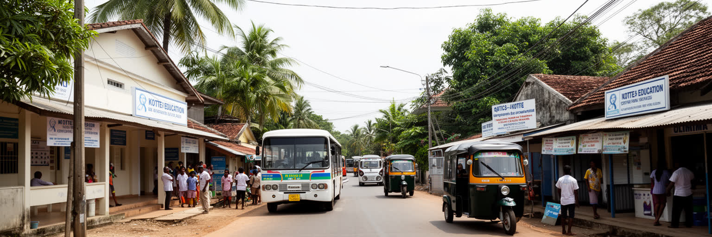
コッテは国会の街として知られるが、日々の都市を動かすのは学校、病院、診療所、役所、銀行、商店、飲食店、交通、家事労働、不動産管理といったサービスの積み重ねです。市の公式情報は、域内に多くの政府学校と多数の児童生徒、教員がいることを示し、教育が地域の大きな機能であることを物語ります。朝夕の道路では、通勤者と同じくらい学校送迎が目立ち、制服の子ども、保護者、三輪タクシー、バス、店先の朝食が都市のリズムを作ります。教育機関が集まることは、地域の中間層を引きつけ、不動産価格や賃貸需要を押し上げる一方、交通渋滞と安全な歩行空間の不足も生みます。サービス産業は比較的安定した雇用を作りますが、清掃、警備、配達、店舗、家事労働の多くは低賃金で、物価上昇の影響を強く受けます。行政首都の落ち着いた表情の裏側には、通勤時間に合わせて働く人、学校費を工面する家族、医療へのアクセスを求める高齢者がいます。コッテを読むには、国会の象徴性だけでなく、都市生活を維持する細かなサービス労働を見る必要があります。首都の品位は、議事堂の外で働く人々の暮らしにも支えられています。教育と医療は住民だけでなく周辺自治体から来る利用者も受け止めるため、昼間人口は市域人口より重く感じられます。公共サービスの質は、都市圏全体の生活水準を左右する重要な要素です。
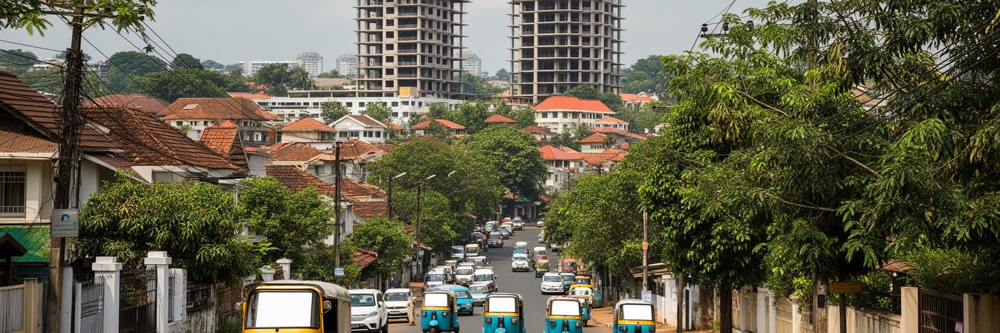
コッテは行政首都でありながら、実際の生活圏ではコロンボの東側郊外として機能します。西には商業首都コロンボ、周囲にはラージャギリヤ、ナワラ、ヌゲゴダ、バッタラムッラなどの地区が連なり、市境は通勤者にとってほとんど見えません。オフィス、学校、病院、大学、ショッピング、寺院、住宅地は複数の自治体にまたがり、朝夕の交通は一つの都市圏として動きます。幹線道路沿いにはマンション、店舗、銀行、飲食店、塾、診療所が増え、かつての低層住宅地は密度を高めています。地価上昇は資産を持つ世帯には利益をもたらすが、借家人、若い家族、低所得の労働者には住み続ける負担になります。行政区分が細かい都市圏では、排水、道路、バス、廃棄物、緑地、洪水対策を一体で扱うことが難しいです。コッテの問題はコッテだけで閉じず、コロンボの雇用、港湾経済、政府機関の配置、郊外住宅市場と連動しています。小さな市域の数字だけを見ると、都市の実像は小さく見えすぎます。実際には、住民の一日は市境を何度も越え、買い物、通学、通院、礼拝、仕事をつないでいます。コッテは首都であると同時に、巨大化するコロンボ都市圏の身近な住宅都市でもあります。この連続性は便利さを生むが、自治体ごとの計画差も目立たせます。ある道路を広げても隣接地区の排水やバス停が弱ければ、混雑と冠水は別の場所へ移ります。都市圏で考える視点が欠かせません。
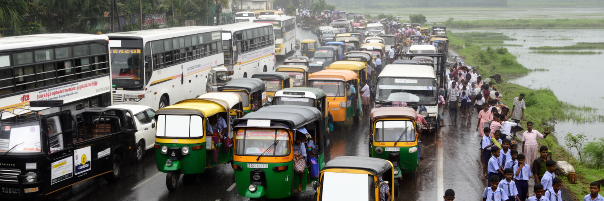
コッテの日常を最も直接に左右するのは交通です。国会周辺の広い道路、コロンボへ向かう幹線、学校の前の細い道、三輪タクシー、バス、自家用車、歩行者、自転車が、朝夕に一斉に重なります。行政機関や学校が多い都市では、通勤と送迎の時間が集中し、短い距離でも移動に時間がかかります。雨季には排水不良や湿地周辺の冠水が渋滞を悪化させ、歩道の不足は子どもや高齢者の安全を脅かします。国会周辺では警備や式典、抗議行動による交通規制も起こり、政治都市ならではの移動の不確実性があります。道路整備は便利さを高めるが、自動車依存を強めるだけなら、さらに混雑と大気汚染を招きます。バスの信頼性、乗り継ぎ、歩きやすい道、学校周辺の安全対策、雨の日の排水、公共空間の陰は、都市生活の質を大きく変えます。コッテは大都市中心部のような高層密集地ではありませんが、限られた道路に行政、教育、住宅、商業の移動が集中するため、交通問題は小さくありません。移動の不便は時間の損失だけでなく、家族の負担、学習時間、医療アクセス、店舗の売上にも影響します。首都機能を支えるには、車を通すだけでなく、人が安全に歩ける都市であることが欠かせません。特に学校周辺では、短時間の停車、歩道の途切れ、雨の日の水たまりが重なり、日々の危険になります。小さな交差点の改善や日陰のある歩行路も、首都の重要なインフラです。
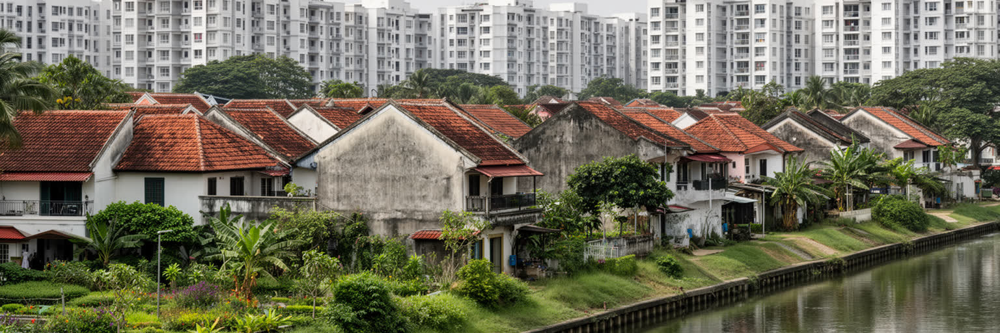
コッテの住宅地は、首都機能とコロンボ都市圏の成長に押されて変化しています。かつての庭付き住宅、寺院に近い路地、運河沿いの住まい、低層の商店街の間に、集合住宅、オフィス、教育施設、医療施設が入り込み、土地の使い方は細かく変わります。国会に近いこと、学校が多いこと、コロンボ中心部へ通えること、水辺の緑があることは、地域の魅力である一方、地価と家賃を押し上げます。持ち家世帯は資産価値の上昇を歓迎するかもしれないが、借家人、若い家族、単身労働者、低所得世帯にとっては、住まいの選択肢が狭まります。湿地や低地の近くに建てる場合、洪水や排水、地盤、保険、修繕費も無視できません。住宅開発が個別に進むと、道路、学校、下水、ごみ収集、公園への負荷が後から表面化します。コッテの住宅問題は、スラムの大規模拡大というより、中間層の郊外住宅地が密度を高める過程で、公共サービスと環境が追いつくかどうかの問題です。都市が成熟するほど、静かな住宅地を守りたい住民と、利便性を求める開発圧力の調整が難しくなります。住みやすさは建物の価格だけでなく、雨の日に水が引くか、子どもが歩けるか、近くに緑が残るかで決まります。家を建て替える一軒ごとの判断も、積み重なれば都市の排水や交通を変えます。住宅地の質を保つには、個人の所有権と公共の水辺、道路、学校容量を結びつけて考える必要があります。
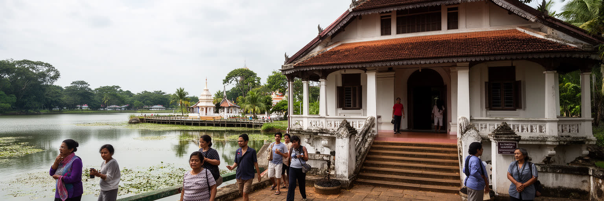
コッテの観光は、海辺リゾートや巨大遺跡のような分かりやすい華やかさではなく、都市の層を歩いて読む旅に向いています。ディヤワンナ湖と国会周辺の水辺、ベッダガナ湿地公園、旧王都の土塁や寺院、コッテ博物館、ラジャ・マハ・ヴィハーラ、石造のアンバラマ、近隣の市場や食堂を結ぶと、政治、自然、宗教、日常が近い距離にあることが分かります。国会施設は警備と公共性のバランスがあり、旅行者は撮影や立ち入りのルールを尊重しなければなりません。寺院では服装や静かな態度が求められ、ペラヘラの時期には地域の信仰行事としての意味を理解したいです。湿地公園では野鳥や水辺の景色が魅力ですが、ごみを出さず、野生生物を追い立てないことが基本になります。コロンボから近いため、短時間の半日旅行にも組み込みやすいが、渋滞を見込んだ余裕ある移動が必要です。コッテを訪れる価値は、観光名所を一つずつ消費することではなく、行政首都が湿地、古都、郊外住宅、寺院と同居していることを実感する点にあります。派手な記念写真より、道の曲がり方、湖の水位、学校帰りの子ども、寺院の鐘、国会へ向かう車列が、都市の本質を教えてくれます。短い滞在でも、地域の店で食事をし、地元ガイドや博物館の解説に耳を傾ければ、古都と現代首都の関係は立体的に見えます。観光は静かな観察から深くなる街です。
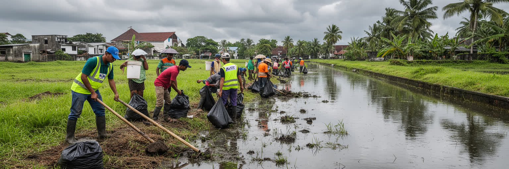
コッテは緑と水辺の多い行政都市として穏やかに見えますが、社会課題は少なくありません。湿地へのごみ投棄、排水不足、洪水、交通事故、地価上昇、公共空間の不足、学校周辺の混雑、高齢化、低賃金サービス労働、都市貧困は、日常の細部に現れます。市の公式説明が指摘するように、湿地が廃水や雨水を受け止めている現実は、裏を返せば下水や排水の整備が十分でない場所があることを示します。都市が便利になるほど消費も増え、ごみ処理と水質管理は難しくなります。行政首都であることは、公共性の基準を高く求められるということでもあります。国会の近くで公共空間が整っていても、住宅地の奥で歩道や排水が弱ければ、都市全体の質は高いとは言えません。スリランカの経済危機後、物価、燃料、雇用、公共財政への不安は住民の生活にも影響しました。コッテの課題は、劇的な紛争や急激な崩壊ではなく、静かな劣化として進みやすいです。だからこそ、住民参加、自治体の透明性、湿地保全、学校と地域の協力、公共交通、弱い立場の世帯への配慮が重要になります。首都の価値は、美しい議事堂だけでなく、誰が安全に歩け、誰が清潔な水辺を享受できるかで測られるべきです。公共性は大きな計画だけでなく、排水溝を塞がない、ごみを分別する、歩道を占有しないといった小さな習慣にも宿ります。自治体と住民の信頼が弱ければ、環境政策も交通対策も長続きしません。
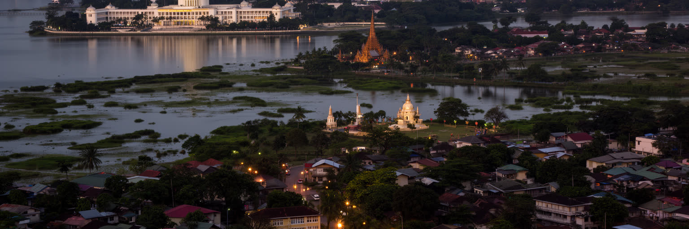
スリジャヤワルダナプラコッテを読むことは、首都とは何かを問い直すことです。ここには巨大な金融街も、港湾のコンテナ群も、観光ポスターの海岸もありません。代わりに、湖上の国会、旧王都の名、仏教寺院、湿地、学校、郊外住宅、渋滞する幹線道路、コロンボへ続く生活圏があります。政治の中心でありながら、街の実態は静かな住宅都市であり、湿地に支えられた水の都市でもあります。国家の象徴は一つの建物に見えますが、その周囲には排水を掃除する人、学校へ急ぐ家族、寺院を守る信徒、家賃を払う労働者、公園を歩く高齢者、交通整理をする警官がいます。コッテは、スリランカの歴史が王都、植民地港湾、独立国家、経済危機、郊外化を経て重なってきた場所です。都市の重要性は規模だけで決まらありません。小さな市域の中で、国家の議論、地域の信仰、湿地の生態、住宅市場、教育、交通が同じ地面を使う時、都市は社会の縮図になります。コッテを歩くと、首都は権力の舞台である前に、水と土地をどう共有するかを試される生活空間だと分かります。湖に映る国会の静けさと、周辺道路の混雑を一緒に見る時、この街の本当の輪郭が立ち上がります。だからコッテは、コロンボの影に隠れた郊外としてだけ扱うには惜しいです。行政、湿地、古都、住宅の日常が交差することで、スリランカの都市化が抱える希望と緊張を静かに示しています。